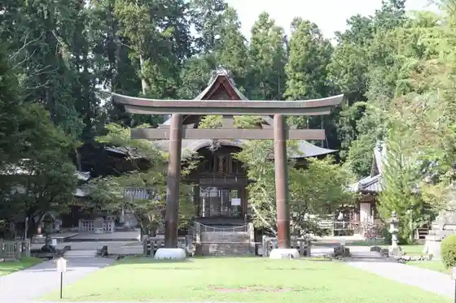
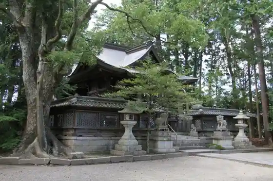
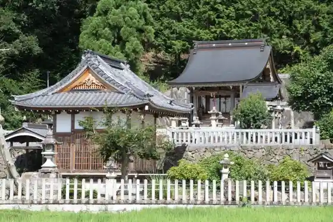

Umami Oka Watamuki Shrine
Hinocho, Shiga · 0748-52-0131 · Official / source link

Hitsusa Shrine
Hinocho, Shiga · 0748-52-6577 · Official / source link

Shoboku Shrine
Hinocho, Shiga · 0748-52-6577 · Official / source link

Hinocho Chomin Kaikan Watamuki Horu Niji
Hinocho, Shiga · 0748-53-3233 · Official / source link
Kumo Gei Tera (Satsuki Tera)
Hinocho, Shiga · 0748-52-6577 · Official / source link
Shoboji (Fuji no Tera)
Hinocho, Shiga · 0748-52-4422 · Official / source link
Masaki Tera
Hinocho, Shiga · 0748-52-0227 · Official / source link
Shigaraki In
Hinocho, Shiga · 0748-52-0170 · Official / source link
Hinocho Kawa Dam
Hinocho, Shiga · 0748-52-6577 · Official / source link
Otowa Castle Ruins
Hinocho, Shiga · 0748-52-6577 · Official / source link
Nakano Castle Ruins (Hinocho Castle Ruins)
Hinocho, Shiga · 0748-52-6577 · Official / source link
Hinocho no Streetscape
Hinocho, Shiga · 0748-52-6577 · Official / source link
Oni Shitsu Shrine (Oni Shitsu Shu Shi no Haka)
Hinocho, Shiga · 0748-52-6577 · Official / source link
Folk History Museum (Omi Hinocho Shonin Kan)
Hinocho, Shiga · 0748-52-0007 · Official / source link
Shiga Nogyo Park Burume no Oka
Hinocho, Shiga · 0748-52-2611 · Official / source link
Kama Kakeya Honshakunage Gunraku
Hinocho, Shiga · Official / source link
Koteji & Oto Campground (Gurimu Boken Forest)
Hinocho, Shiga · 0748-53-0809 · Official / source link
Shiga Prefectural Chikusan Gijutsu Shinko Center
Hinocho, Shiga · 0748-52-1221 · Official / source link
Omi Hiruzugorufu Kurabu
Hinocho, Shiga · 0748-53-1177 · Official / source link
Gamo Gorufu Kurabu
Hinocho, Shiga · 0748-52-4640 · Official / source link
Hinocho Gorufu Kurabu
Hinocho, Shiga · 0748-52-2115 · Official / source link
Hon Sei Tera Garden
Hinocho, Shiga · 0748-52-0004 · Official / source link
Kongo Tei Tera
Hinocho, Shiga · 0748-52-4904 · Official / source link
Saimyo Zendera
Hinocho, Shiga · 0748-52-2647 · Official / source link
Hinocho Machikado Kanno Kan (Kyu Masano Genzo Yakuten)
Hinocho, Shiga · Official / source link
NPO Hojin Hinocho Daria Sono
Hinocho, Shiga · Official / source link
Omi Hinocho Shonin Furusato Kan (Kyu Sanchu Shokichi Tei)
Hinocho, Shiga · 0748-52-0008 · Official / source link
Omitetsudo Hinocho Eki
Hinocho, Shiga · 0749-22-3303 · Official / source link
Gamo Ujisato Ko Dozo
Hinocho, Shiga · Official / source link
Zao Dam
Hinocho, Shiga · 0748-52-6577 · Official / source link
Watamuki Yama
Hinocho, Shiga · 0748-52-6577 · Official / source link
Omitetsudo Hinocho Ekisha (Hinocho Eki Tetsudo Museum)
Hinocho, Shiga · 0748-53-1911 · Official / source link
Otani Park
Hinocho, Shiga · Official / source link
Shakunage Gakko (Kyu Kama Kakari Shogakko)
Hinocho, Shiga · Official / source link
Hinocho Town Hall
Hinocho, Shiga · 0748-52-1211 · Official / source link